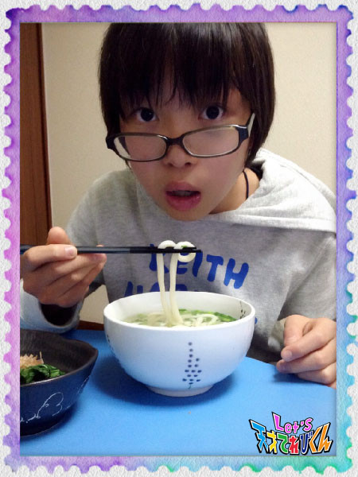
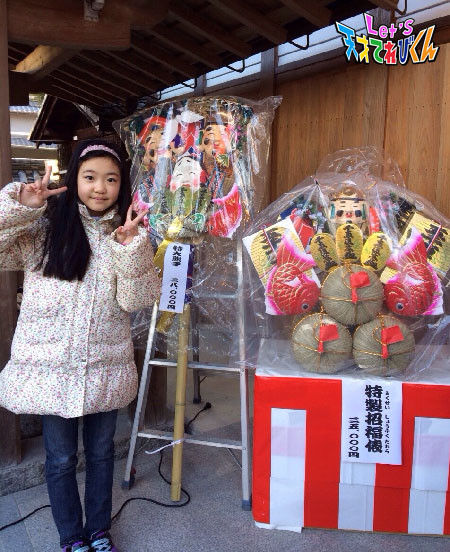
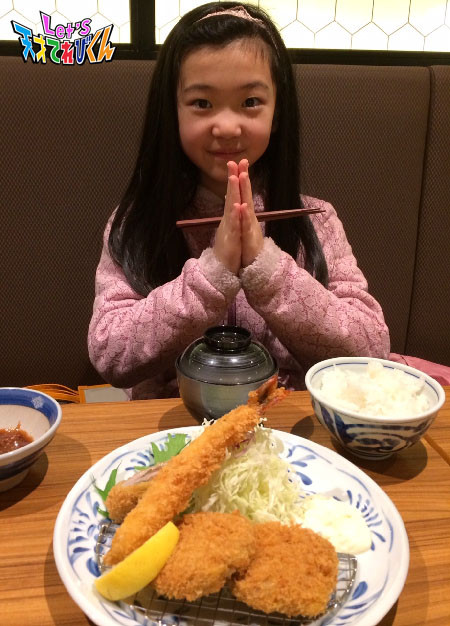
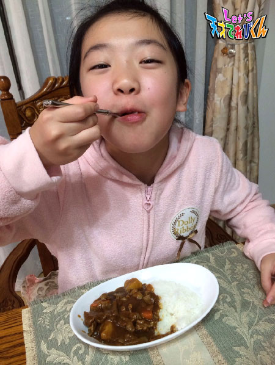

<<2016年1月 | トップページ | 2016年3月>>
2016年2月
とっておきの写真！［辻村晃佑］
どうもー辻村晃佑です (*´∇｀*)
上では楽しげな顔文字を使ってるけど、
実はめっちゃやばい状況なんですよ！そこの奥さん (´Д｀)
ん？何でやばいかって？
本当は分かってるくせにー (*´∀｀)
え？早く教えろだって？
しょうがないなー (´・-・`)
う、何だかすごく眠くなって・・・・・・
( ω )スヤァ・・・
こうして迷宮入りになったのさ！ψ(・∀・)ψ
なぁんて・・・
だんだん近づいてくる学期末テストのことなんだけどね (´・∀・`)
学生にとってはすごく悩むことだよね (｀・ω・)
とりあえずガンバロウ・・・
まぁふざけるのはここまでにして
本題です！！
実は僕、昔は写真を撮られるのがあんまり好きじゃなかったんですよ！
何で好きじゃなかったというと
小さい頃は写真を撮るときに「 うごかないでー 」と言われるのが
あんまり好きじゃなかったんですよね (´・ω・｀)
まぁ本人の意志とは関係なく、バシバシ撮られてましたけどね・・・ (((´・ω・`)))
改めて小さかった頃の写真を見直して、
これすげー！って思ったのがこの写真です！
これは１歳くらいのときのものですね。
僕の前にある箱みたいなものは、お母さんの友達の楽器で、
「 クラヴィコード 」というピアノよりも昔からあった鍵盤楽器だそうです。
ピアノより昔って、すごくないですか？？
こんな珍しい楽器を体験できたのに、
まったく覚えてない自分がくやしい ((>ω<。))
小さい頃はいろいろなことを体験しても、ほとんど覚えてないからなー (´д⊂)
またこんな珍しい楽器をさわってみたいなー (￣・ω・￣)
そして最近にも、とっておきの写真があります！
それは岩手に行ったときの写真です (*´∀｀)
このときはたくさん雪があって！ (｀・ω・´)
「 ふぉおぉおお！！！ 」て感じでテンションが上がりました！
こんなにたくさんの雪を見るのは、
去年、学校行事でスキーに行ったとき以来なので、
すごく思い出に残りましたよ (￣▽￣)
以上、辻村晃佑でした！
バイバイ ( ´ ▽ ` )ノ
投稿者:辻村晃佑 | 投稿時間:18時45分 | カテゴリ：てれび戦士 | 固定リンク
とっておきの写真！［桐畑カレン］
こんにちは。
カレンです (*^^*)
「 鬼は外～、福は内～ 」
節分の日にお友だちと、神社と商店街の豆まきに行ってきました ( ・∇・)
楽しかったです！
じゃーん！！
☆ my camera ☆
このカメラは、９才のおたん生日プレゼントにもらったものなんです。
私のおたん生日は９月なんですが、
夏休みに沖縄に行くことになって、
どうしても自分のカメラで写真をとりたくて (^^;
「 おたん生日プレゼントを早めにください m(._.)m 」
と、お願いしてプレゼントしてもらいました。
これが my camera で初めてとった写真たちです♪
１. 光のカーテンの中を泳ぐお魚
２. ジンベイザメにいつもくっついて泳いでるコバンザメ
３. きれいなピンクのお魚
４. チロリ・・・とカメラ目線のデーンとしたナポレオンフィッシュ（ 一番お気に入りのお魚です ）
どうですか？
スイスイ、フヨフヨ、クルクル泳ぐお魚さんたちを、ぼーっとみながら、
シャッターチャンス！がきたら、パシャパシャとりました。
自分のカメラでとったという特別感があって、
お気に入りでとっておきの写真なんですよ♪
投稿者:桐畑カレン | 投稿時間:18時45分 | カテゴリ：てれび戦士 | 固定リンク
とっておきの写真！［笹原尚季］
こんばんは～。
笹原です (^^)
今回は、今年度の出来事を振り返ってみました。
たくさんの思い出があるなー！
昨年度は、北海道でるるを仲間にしたり、
東京どちゃもん・もものうちを仲間にしたり・・・たくさんありました。
今年度は、徳島どちゃもん・かさぽんたすを助けました！
すごく寒かったけど、阿波踊りもすごく難しかったけど、
今では楽しい思い出の１つです！
今回のお題は、「 とっておきの写真！ 」です。
たくさんの写真がありますが、
その中でもお気に入りの写真は２つあります。
１つ目は、さっき話した北海道の写真です。

涼しくて絶景でした！
すごく心に残っていて、
今でも、写真を見ると楽しい気分になります (o^^o)
もう１枚は、てれび戦士の男子で撮った写真です！
大野課長も入ってて、いい写真だなーって思います。
みんな笑顔で、
まさにこれは、写真界のレジェンドや～～！
そしておまけに～、
Let's！
って思ったら、僕はピースでした (>_<)
これも、いい写真ですね♪
投稿者:笹原尚季 | 投稿時間:18時54分 | カテゴリ：てれび戦士 | 固定リンク
とっておきの写真！［原田明莉］
☆ Hello ☆
明莉です！
最近は日が長くなってきたので
５時まで遊んでいても安心して帰れます！！
ちょっとした喜び・・・！笑
さてさて本題に入りたいと思います！
今回のお題は
「 とっておきの写真！ 」
です！
私のとっておきの写真は２枚あります！
まずは海！ 沖縄の
由布島（ ゆぶじま ）で月香ちゃんと撮ってもらった写真です！
この写真全く加工してません！
少しの夕焼けが入っていて
なんか雲が特別すごいかっこいい形してるし
暗すぎず明るすぎず
ちょうどいい感じで
たまたまとれた
この写真がすごい好きなんです！
海もものすごくきれいだし
いやされるなぁ～
これが１つの私のとっておきの写真です！
それで
もう１つが
お友達とお友達のお父さんと
走って走ってたくさん歩いている途中
山のなかで撮った写真です！
友達と２人っていうところがまさに良くて
たくさん走って歩いて
ここまできた！！！
っていう思い出も詰まっています！
本当にきれいで
私の好きなかんじ！
これも私のとっておきの写真です！
私のとっておきの写真、
「 海 」と「 山 」でした！
自然の中での写真が自分的にすきなのかな？
カシャカシャ撮っていたら見つかるかもしれませんね！
☆ Let's！ パシャり！ ☆
あ！異次元獣のせいで止まっちゃったりしないように気をつけてください！
安心して写真をとれないなんてやだなー。
みなさんで力を合わせて異次元獣をたおしましょう！！
☆ Let's！！！ ☆
投稿者:原田明莉 | 投稿時間:18時45分 | カテゴリ：てれび戦士 | 固定リンク
とっておきの写真！［小西憧弥］
こんにちはー！憧弥です。
念願のスキー＆温泉に連れて行ってもらいました。
去年は行けなくて、
一昨年はスノーボードをしてたから、スキーはかなり久しぶりで、
最初何回もこけちゃいました（ 笑 ）
でも、すぐ慣れて山の上の方にも行けました！
２日間とも晴天ですごく楽しかったです！
それでは本題「 とっておきの写真！ 」です。
いちばんのお気に入りは、
初めて自分１人でブラックバスを釣り上げた時の写真です！
もう、ただひと言、うれしかったなぁ（≧∇≦）
もう１枚は、初めてお父さんにブラックバス釣りに連れて行ってもらったとき、
３投目でお父さんが53㎝のバスを釣り上げて、
それを憧弥が持ち上げてる写真です。
この２枚は最高の思い出です！
大人になっても大切にします。
あと、てれび戦士や友達との写真もすっごく大切！
宝物です。
投稿者:小西憧弥 | 投稿時間:18時45分 | カテゴリ：てれび戦士 | 固定リンク
ステキなおくりもの［赤崎月香］
こんにちは ヽ(^▽^@)ノ
赤崎月香です。
突然ですが！！！
私は、飛行機が大好きです♪
なので将来は、飛行機に住みたいです♪
そんな夢を家族に話したら、
「 ふ～ん、はいはい 」
と、言われました。*o_ _)oチーン・・・
かなり本気だったんだけどな。
☆。・:*:・°★,。・:*:・°☆
『 ステキなおくりもの 』
誰かにプレゼントしたり・・・
誰かにプレゼントをもらったり・・・
わくわく、ドキドキ、しますよね (^^*))((*^^)
私がいちばんうれしかったおくりものは、
照れくさくて、今まで一度も言ったことがないけど、
★ 妹( いもうと ）★ です。o(*^▽^*)o
毎日、毎日、ケンカをするけど、
妹と遊んだり、お話ししたり、楽しい♪
今でも覚えているのは、
お母さんのおヘソをのぞき込んで、
「 ねぃねぃですよ～♪
早く出ておいで～。いっしょに遊ぼうよ～。」
って、話しかけていました。
でも、赤ちゃんの妹のことばかりで、
心がチクチクさみしいときもあったかなぁ (^▽^;)
☆。・:*:・°★,。・:*:・°☆
赤崎家は、家族がめちゃめちゃ仲良しです！！
毎年クリスマスには、
お父さんが、家族みんなにプレゼントをくれます♪
でも！！！！！
去年は、お母さんの発案で、
家族１人１人がプレゼントを用意して、
家族みんなでプレゼント交換をすることになりました！！
きまりは、
『 予算400円 』
『 家族の誰がもらっても喜ぶもの 』
『 プレゼントは、誰にもナイショで決めること 』です。
(○￣ ～ ￣○;)う～ん・・・
家族の誰にプレゼントがいくかわからないので、
めちゃめちゃ悩みました！
こんなに家族のことを考えたことは、
なかったかもしれません。( ;￣ω￣)ゞ
お父さんのこと・・・
お母さんのこと・・・
妹のこと・・・
みんなの笑顔を思い出して、
プレゼントを選びました♪(ｏ￣∀￣)ノ
クリスマスにくじ引きをして、
それぞれにプレゼントされました。
お父さんのは、お母さんへ。
お母さんのは、妹へ。
私のは、お父さんへ。
妹のは、私へ。
みんな笑顔でした。(*^^*)
プレゼントもうれしかったけど、
家族が、家族みんなのことを思って、
プレゼントを選んだんだと思ったら、
ニヤニヤが止まりません！！！！！
プレゼントの中身は！！！！！
ナイショ (￣∇￣*)ゞ
プレゼントは、中身も大事だけど、
あげる相手を思うことが
いちばん大事なんだね。
またね～ ヾ(*'-'*)
投稿者:赤崎月香 | 投稿時間:18時45分 | カテゴリ：てれび戦士 | 固定リンク
ステキなおくりもの［笹原尚季］
笹原です、こんにちは～！
今年度も、色々なことがありましたね～。
どちゃもんを仲間にしたり助けたり、
さらに回収されちゃったり・・・ (;_;)
回収されたぷうか達を、無事に助けることができるのかな！？
他にも、異次元獣を元の姿に戻したりもしました。
今回のお題は、「 ステキなおくりもの 」です。
いろいろなものを、たくさんの人からもらいました。
家族やお兄ちゃんから誕生日に手紙やプレゼントをもらったり、
知り合いの方から、どちゃもん絶対守ってねって、お守りをもらったりもしました。
でも、いちばんうれしかったのは・・・手紙です！
応援してくれている、さまざまな年齢の人が一生けんめい書いてくれた手紙と一緒に、
似顔絵や手作りのプレゼントが入っていたりして、
ほんとにうれしかった (o^^o)
「 超次元帝国から地球を守ってね 」ってたくさん手紙をもらいました。
応援してくれているその気持ちが、すごくうれしくて、
手紙を読むたびにすごくやる気がでて、
頑張るぞーって気持ちになりました (*^o^*)
これからも頑張るぞ！
つっきーにみんなの写真を撮ってもらいました♪
あと、お母さんの誕生日に時計をプレゼントしたら、
ずっと大切にするねって言ってくれてすっごくうれしかったです！！
投稿者:笹原尚季 | 投稿時間:18時45分 | カテゴリ：てれび戦士 | 固定リンク
ステキなおくりもの［杉本瑛］
みなさん、ヤクシミズ（ ウイグル語で「 こんにちは 」 ）！
杉本瑛です ^o^
今回のお題は「 ステキなおくりもの 」！！
今まで瑛あての「ステキなおくりもの」をたくさん頂きました。
最近だと、浜村淳さんからのお手紙・家族からのお年玉
・お友達からの年賀状・てれび戦士からのお誕生日プレゼント・ファンレター、、等々
その中で、クリスマスに頂いたステキなおくりものをご紹介します。
それは、サンタさんからの腕時計と、
先輩からのスケジュール帳です （＾∇＾）
サンタさんからの腕時計はブレスレットタイプで可愛いので、
しょっちゅう付けています！！
とても便利で気に入っているんです （≧∇≦）
先輩からのスケジュール帳は
表紙に『 不思議の国のアリス 』が刺繍（ ししゅう ）してあって、
キュートなの (*^^*)
プレゼントしてくださったときに
「 アリスが瑛ちゃんに似ているから、これにしたんだ。」とおっしゃっていました！
ちゃんと瑛のことを見ていてくださって、ありがたいです(*^^*)
11歳になる瑛に、サンタさんは瑛に時間管理の大切さを教えたくて、
腕時計をプレゼントしてくれたんだと思います。
そして、先輩は自己管理が大切だということを教えたかったから、
スケジュール帳をくれたと、瑛は考えてるんです。
だから、２人の期待に応えられるように
今年も精一杯突き進んでいきます☆
投稿者:杉本瑛 | 投稿時間:18時54分 | カテゴリ：てれび戦士 | 固定リンク
ステキなおくりもの［小澤竜心］
こんにちは！竜心です。
ぼくの家では、お誕生日のとき、
家族で相談してプレゼントします。
ぼくには、お父さんとお母さんが、
『 音楽プレーヤー 』をプレゼントしてくれました。
「 いろんな音楽を聞いてテンションあげてね。 」
と言われました。
どこでも好きな曲を聞くことができて、
うれしい～ (*≧∀≦*)
もっといろんな音楽を好きになって、
元気にすごしたいです♪
この前は、お母さんのお誕生日だったので、
お父さんと一緒に考えて・・・
『 桜のおちゃわん 』をプレゼント ("⌒∇⌒")

「 花が開くような１年になってほしいな～ 。」
と思って、これにしました！
とても喜んでもらえて、うれしいです (///ω///)♪
ぼくは今まで、いろいろな人から
「 ステキなおくりもの 」をいただいて、
とてもありがたいです (*´∇｀*)
もうひとつ、お誕生日のお話☆
ぼくが漢字検定の勉強をしていたら、
赤崎さんが、
『 えんぴつと消しゴム、キャップのセット 』を
プレゼントしてくれました。
「 合格するように、魔法かけちょったけぇね～ (^o^) 」
と言われました。
プレゼントも言葉も、うれしかったです (*´ω｀*)
魔法のえんぴつで、勉強もがんばります！！
みんな、ぼくにとって、
「 ステキなおくりもの 」です♪
投稿者:小澤竜心 | 投稿時間:18時45分 | カテゴリ：てれび戦士 | 固定リンク
ステキなおくりもの［桐畑カレン］
こんにちは。
カレンです (*^^*)
私が小さいときから
ずっと大切にしている宝物のひとつの「 くまたん 」(・∀・)
くまたんは、お母さんとおばあちゃんとたまたま行ったケーキ屋さんに売っていた、
くまのお人形なんです。

お母さんには、
「 買うお約束をした日じゃないからだめだよ 」
と言われたけど、私がすっごく気に入って欲しがっていたから、
おばあちゃんがこっそり買ってプレゼントしてくれました。
買ってもらえないよおおおお （ ＴДＴ） と思って泣いていたから、
おばあちゃんが、
「 はい、カレンちゃんにプレゼント 」
と言ってくれたときは、
とってもとってもとーってもうれしかったです (*≧∀≦*)
顔がパアーッてなる感じ！
プレゼントをもらったときって、いつもこんな感じになりませんか？？
私はプレゼントをおくる方も好きなんです。
何故かというと・・・
「 何がいいかな～？何が好きかな～？ 」って、
相手のことを思いうかべて、なやみながら選ぶのが楽しいからです。
プレゼントを渡して、
「 ありがとう♪ 」って喜んでもらえると、私もうれしくなります。
おくりものは、
おくるほうもおくられるほうも幸せな気持ちになれる、ステキなものなんです！！
投稿者:桐畑カレン | 投稿時間:18時45分 | カテゴリ：てれび戦士 | 固定リンク
ステキなおくりもの［林武尊］
こんにちは、林 武尊です。
毎日寒いですね～
みなさん、風邪ひかないよう注意してください。
今回のお題は「 ステキなおくりもの 」です。
ぼくの思い出のプレゼントは、小学校２年生になったときに、
おばあちゃんから買ってもらった自転車です。
このときぼくは、生まれてはじめて舞台に出演して、
おばあちゃんも毎日見に来てくれました。
そのあとの誕生日に、
「 がんばったね～ 」と自転車をプレゼントしてもらったのです。
子ども用の自転車の中で、いちばん大きいサイズの自転車を買ってもらいました。
まだ２年生だったので、足がやっと届くくらいでした。
でも今は・・・
ずいぶん、自転車が小さくなっちゃった。
じゃなくて、僕が大きくなったんですね～
まわりの友達は、みんな大人用の自転車に変わってしまったけど、
ぼくは小学校を卒業するまでは、この自転車のお世話になろうと思います。
５年間、いろんなところに連れて行ってくれてありがとうね～
ではまた！
投稿者:林武尊 | 投稿時間:18時45分 | カテゴリ：てれび戦士 | 固定リンク
ステキなおくりもの［飯島緋梨］
こんにちは (」・ω・)
飯島緋梨です。
いよいよ２月！
１か月が過ぎるのって早過ぎる？！
びっくり (^-^)
この前のお休みの日に、
カレンちゃんと映画を見てからスケートに行きました。
いっぱい遊べて楽しかった～ (^O^)
さてさて今回のお題は
「 ステキなおくりもの ｣
私がもらったステキなおくりものは
みなさんからもらったお手紙と似顔絵です！！
はげましのお手紙やどちゃもんへの感想
すごくうれしいです。
似顔絵は、どの絵もすごく可愛く描いてくれて
うれし過ぎます (*´∇｀*)
なかなかお返事書けないけど、
全部のお手紙、大事にしています。
本当にありがとうございます (^O^)
Let's ステキなおくりもの
投稿者:飯島緋梨 | 投稿時間:18時45分 | カテゴリ：てれび戦士 | 固定リンク
ステキなおくりもの［小西憧弥］
こんにちは。
小西憧弥です！
朝、学校までの道に霜柱（ しもばしら ）を見つけたから、
ふんでみたらサクッサクッて気持ちよかったよ。
みんなも探してふんでみて。
寒いけど、雪が積もったらスキーとか雪合戦したいなー。
ではでは本題です。
「 ステキなおくりもの 」
僕は、３年生になるときに
お父さんの仕事の都合で神奈川県に引っ越して来ました。
引っ越す前のお家は、
生まれたときから住んでいたから、近所の人達と仲が良くて、
みんなで花火をしたり、バーベキューしたり、スキーに一緒に行ったりしてました。
だから引っ越すのは、ものすごく寂しかったな。
そのお別れのとき、みんなが寄せ書きをしてプレゼントしてくれました！
うれしくて泣いちゃいました (T_T)
今でも大切に飾っています (^-^)
投稿者:小西憧弥 | 投稿時間:18時54分 | カテゴリ：てれび戦士 | 固定リンク
ステキなおくりもの［原田明莉］
☆ Hello ☆
明莉です！
ちょっと前まではすごく寒かったけど
最近は暖かくなってきた気がします！
暖かくてお日さまが出てる日が私は大好きなので
これからまたどんどん暖かくなってくれるとうれしいです！
でも風邪の時期はこれからなので
気をつけないと！！
みなさんも風邪ひかないように気をつけて
毎日元気にいきましょー！
私はご飯をモリモリ食べてよく寝て
いつも元気です！！！
ではでは本題に入ります！
今回のテーマは
「 ステキなおくりもの 」
です！
私のステキなおくりものとは
すこし路線がはずれるかもしれないんですが
出会いです！
最近、出会いのキセキをものすごく実感しました！
お友達や
習いごとの仲間たち
学校の先生に
てれび戦士も！！！
それ以外にも私を
支えてくれている方々！
その大切なひとに会える確率って
73億分の１！！！！！！！
なんですね！
宝くじなどに当たる確率よりも、なによりもこの確率が低いんですよね！
これは神様がおくってくれた私への
「 ステキなおくりもの 」
なんだと思います！
このおくりものをいつまでも大切に
そして絶対になくさないようにしたいと思います！
このおくりものには一生感謝したいです！
みなさんのステキなおくりものとはなんですかー？
投稿者:原田明莉 | 投稿時間:18時45分 | カテゴリ：てれび戦士 | 固定リンク
ステキなおくりもの［瀧澤翼］
こんにちは！
最近ちょっぴり寒さに慣れてきた瀧澤翼です！
この前、千葉県袖ケ浦にあるテーマパークのイルミネーションに行ってきました！
みてくださいこの景色！
たくさんのイルミネーションに囲まれたときは
すごく最高な気分になりますよ～(^-^)
もちろんイルミネーションと一緒にパシャリ(^O^)

僕よりイルミネーションの方に目がいってしまいます （ 笑 ）
ぜひ、機会があったら行ってみてください！
さて、今回のテーマは「 ステキなおくりもの 」ですね。
ステキなおくりものかぁ～
去年の母の日に、
姉と一緒に作った写真入りのメッセージアルバムをお母さんに渡しました！
母の日って少し恥ずかしいけど、
ちゃんと思いを伝えることが大事だと思います。
お母さんも喜んでくれて、その母の日は大成功でした！
思いを伝えるっていいことですね！
Let's おくりもの！
投稿者:瀧澤翼 | 投稿時間:18時45分 | カテゴリ：てれび戦士 | 固定リンク
ステキなおくりもの［齋藤茉日］
こんにちは♪
茉日です！
今回のテーマは
《 ステキなおくりもの 》です ( ´ ▽ ` )ﾉ
おくりものって、もらった方はもちろんうれしいけど
あげる方も、喜んでくれるかドキドキしたり。
楽しいですよね！
今日は、クリスマスにお母さんにあげたプレゼントを紹介します！
タオルです！
１人で出かけたときに、「 こ！これだ！ 」
と、私の直感がそう言っていたので
クリスマスの20日前ぐらいに購入しました笑＊＊
渡すとき、私の理想では
24日の深夜に一度起きて、お母さんの寝室に忍び込もう！
という予定だったのですが、グッッッッッッスリ寝てしまい。。。
起きたらお昼の11：30でした (^^;;
なのでリビングにいたお母さんを一回追い出したあと、
タオルの入ったプレゼントをセットして
リビングに呼びました笑＊＊
もうバレバレです （≧∇≦）
でも、とっても喜んでくれたのでうれしかったです ( ´ ▽ ` )ﾉ
プレゼント交換最高～♪
皆さんはどんなおくりものをしたこと、されたことがありますか？
お話聞くだけで盛り上がれそう！！
それでは今回はこの辺で
またねん (*^^*)
投稿者:齋藤茉日 | 投稿時間:18時45分 | カテゴリ：てれび戦士 | 固定リンク
ステキなおくりもの［辻村晃佑］
(。・ω・)ノ どもー辻村晃佑ですー
ついにあれが近づいてきましたよ (´-д-｀)
そう、学期末テストがね！
やばやば勉強しなきゃ (◎_◎;) と思いつつも
机に足が向かわない今日この頃、みな様どうお過ごしですか？
私は元気です (о´∀`о)
・・・・・・・・・・・・・・・
こんな茶番してる暇はねぇんだ ( ｀△´)
誰だこんな茶番してる奴・・・・・・・・・・・・・・・
はっ！自分だ Σ(´□｀;)
まぁこれは置いといて、本題です (^_^)ノ
今回のお題は「 ステキなおくりもの 」です！！
今までいろいろなおくりものをもらってきたんですけど、
一番ステキだったおくりものは
クリスマスの前の日に、少し早めのクリスマスプレゼントを
両親からもらったことです (*´∇｀*)
ちゃんとリボンとかの包装をしてくれて
「 Σ(゜Д゜)スゲェ！！ 」って思いました。
そして包装を開けてみたら
なんとでっかいクマのぬいぐるみが入っていて (。_。)
ウワッと思わず口から出てたらしく、
ぬいぐるみ好きの僕としては
それぐらいビックリして、うれしかったおくりものです！！
そのクマは今でも僕の一番のお気に入りなんですよ (*´∀｀)
懐かしいなー、もう３年前かー
時が流れるのは早いですね (￣▽￣)
懐かしく思い出して、少ししんみりしたけど今回はここまで
( ´ ▽ ` )ノ バイバイ
投稿者:辻村晃佑 | 投稿時間:18時45分 | カテゴリ：てれび戦士 | 固定リンク
お気に入りの食べもの［原田明莉］
☆ Hello ☆
明莉です！
冬だけど、あったかいきがするー！
寒いのが苦手で暑いのが好きな私には
ちょっとうれしいことでもあります ^o^
『 おじいちゃん家でお餅つき 』
『 新年会 』
あたたかいので、年末年始も過ごしやすかったです (^^)
ではでは本題に入りたいと思います！
今回のテーマは
「 お気に入りの食べもの 」
です！
お気に入りの食べものは、もちろん
オクラーーー！！！
なんですが、今回は他のことを書きたいと思います！
私は、お母さんとおばあちゃんの料理が大好きです！
というか、単純に食べることが大好きな私・・・！笑笑
でもその中でも、この間おばあちゃんが作ってくれたカレーは
ものすごくおいしかったんです！
私の舌に合ったほどよい甘さのカレーで、
お肉とかおいもとか具がとてもやわらかくて大好きなんです！
これがおばあちゃんが作ってくれたカレーです！
プラス、私は、最近
卵をのせるのにはまっています！
とっっってもおいしーーーですよ！
ベストは半熟卵なんですが、なかなか半熟をつくるのは難しいんですよね・・・
半熟がうまくできたときは
もーーー
テンションがあがってあがって
バクバク食べます！
最高なんです！
カレーに卵、気になった方はぜひやってみてください！
私のお気に入りの食べものは、おばあちゃんのつくるカレーでした！
みなさんのお気に入りの食べものはなんですかー？
投稿者:原田明莉 | 投稿時間:18時54分 | カテゴリ：てれび戦士 | 固定リンク
お気に入りの食べもの［林武尊］
こんにちは林武尊です！！
お正月は、初めて実家に帰らず東京で過ごしましたー(*^^*)
年越しそばを食べ、12時を過ぎてから初詣に行き、
神社でお餅（ もち ）をもらっておしるこを食べましたー
もちろん！！大晦日には紅白歌合戦を見ましたよー ((o(^∇^)o))
今回は紅組が勝ちましたねー
今年はどっちが勝つのかなー？
楽しみです！！
では本題へ。
今回は「 お気に入りの食べもの 」です！！
僕の大好物を３つ、紹介します。
１つめはうどんです！！
それも、普通のかけうどんのやわらかい麺が好きです！！
あの醤油の香ばしいスープと麺を一緒に食べるのが好きです！！

おいしすぎて、メガネが下がっちゃう (#^.^#)
あと小松菜も好きです！！
僕は、毎晩かかさず小松菜のおひたしを食べています！！
おつゆがあの小松菜のシャキシャキ感をひきたたせていて、
本当においしいです。
小松菜は、他にもいろいろな食べかたがあります！
また新たな食べかたをさがしてます。
他にも、きゅうりが好きです！！
やっぱりきゅうりは浅漬けが一番！
とにかく僕はシャキシャキしているものが大好物です。
まだ食べたことがないものも、いっぱいあるとおもいます。
そのなかに好きなものや嫌いなものが出てきても、
大人になったら、ためらわずに、ぱくっと食べたいです (^O^)／
ではまた！
投稿者:林武尊 | 投稿時間:18時45分 | カテゴリ：てれび戦士 | 固定リンク
お気に入りの食べもの［杉本瑛］
みなさん、ドバルダーン（ セルビア語で「 こんにちは 」）！

十日戎（ とおかえびす ）に行きました。
そして餅（ もち ）まきに参加しました！！
やぐらの上に餅まき役の人たちがいて、太鼓の合図で餅をまくんです。
それを参加者が取り合うんですよ (^O^)
過去には飛ばされたり、髪の毛を引っ張られたりしたことがあるくらい (*_*)
みんな、お餅が欲しいので、我を忘れてしまうんです。
でも、今年は年女なので、取れるかなと思ってワクワクしてました（＾∇＾）
餅まき中、１番うしろで待ち構えてました。
取りにくかった上に、おばちゃんたちに押し流されそうでした！
結果は１個！
当たり餅（ 赤い字で“ 当たり ”と書いてあって、景品がもらえるんです ）がなくて
残念でした (＞人＜;)
来年は取れますように ☆彡
今回のお題は「 お気に入りの食べもの 」です！
私のお気に入りの食べものは、トンカツ（≧∇≦）

トンカツ大好きなので、始業式と終業式の日は必ず食べるのが儀式なんです笑
トンカツを食べると、生きててよかったって思います ^_^
トンカツパワーでいつも元気いっぱい、と言っても過言ではないくらい、
お気に入りの食べものなんです！
あとは、自分で作る牛スジカレーもお気に入りです (^O^)

牛スジカレーは、朝ドラの『 ごちそうさん 』で知りました。
牛スジの旨味（ うまみ ）が溶け出すのがたまらないんです ( ^ω^ )
辛口に作って、いつもハフハフいいながら食べています ^o^
みなさんも同じ経験があると思うんですが、
自分で作るとなぜかおいしく感じるんです！
それに心も体もあったまるので、お気に入りなの。
投稿者:杉本瑛 | 投稿時間:18時45分 | カテゴリ：てれび戦士 | 固定リンク
お気に入りの食べもの［小西憧弥］
こんにちはー (^-^)/ 憧弥です。
年末年始、おじいちゃんおばあちゃんの住んでる奈良に遊びに行きました！
大阪のテーマパークに行ったり、カニを食べたり、初詣に行ったり、
のんびりテレビをいっぱい見たり・・・楽しかったぁ (^-^)
あ！あとは、お年玉をいっぱいもらいました。
2015年もいい年だったけど、
2016年はそれ以上にいい年になるように、がんばりまーす！
それでは、本題「 お気に入りの食べもの 」です。
ランキングでいきたいと思います。
５位は、ブラックバスの唐揚げ！
初めて釣ったとき、
お母さんの大反対の中、持って帰って無理言って、唐揚げにしてもらいました。
４位は、安納芋（ あんのういも ）の焼き芋！
サツマイモの中でも安納芋が一番おいしくて
食べたとき驚きました。
３位は、たらこスパゲティー！
スパゲティーといえば、たらこです！
２位は、キツネうどん！
お母さんが作ってくれるキツネうどんは、最高。
１位は、こってり豚骨ラーメンです！
ラーメンを食べに行くときは、必ず豚骨を選びます。
脂（ あぶら ）の量を選べるときは、もちろん多めにします。
今回のランキングは、今のお気に入りです。
また何か気に入ったものがでてくると変わっちゃうけどね （≧∇≦）
投稿者:小西憧弥 | 投稿時間:18時45分 | カテゴリ：てれび戦士 | 固定リンク
ページの一番上へ▲